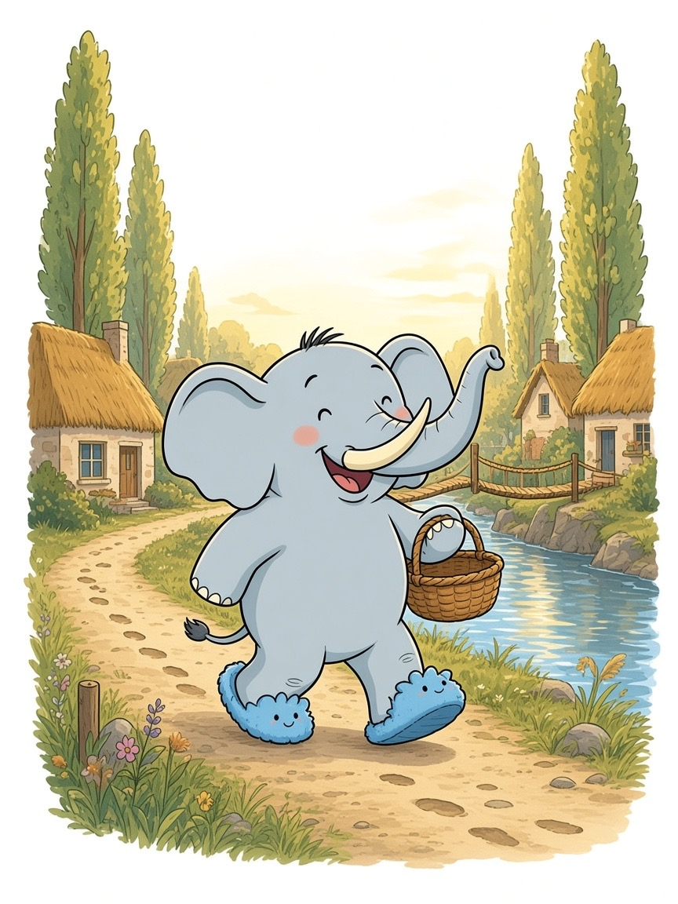
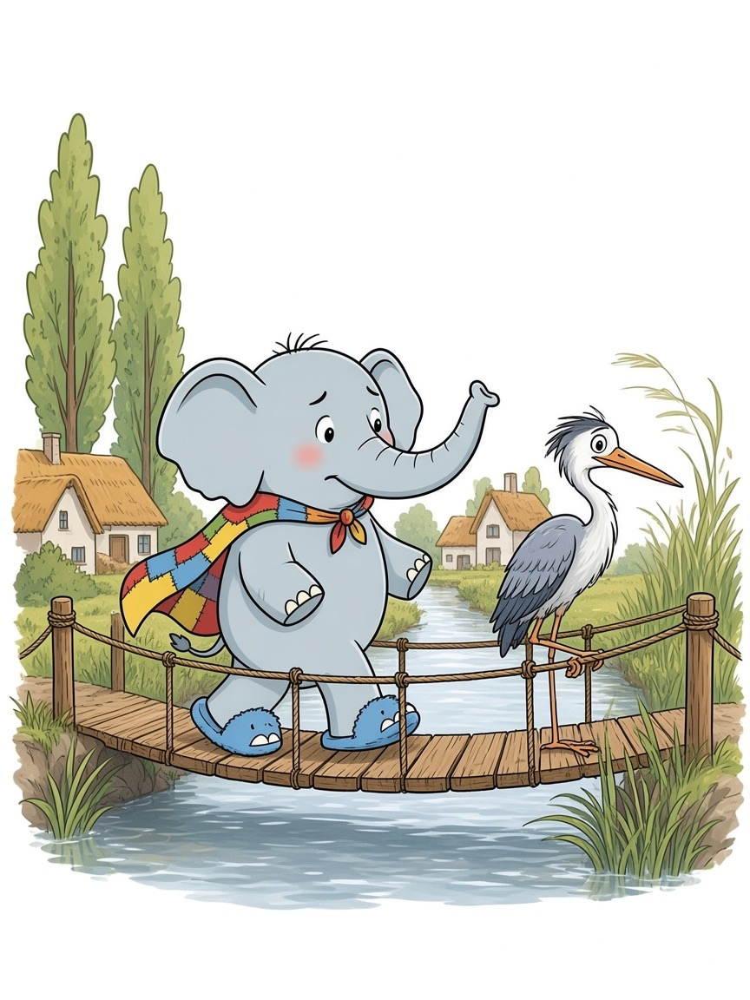
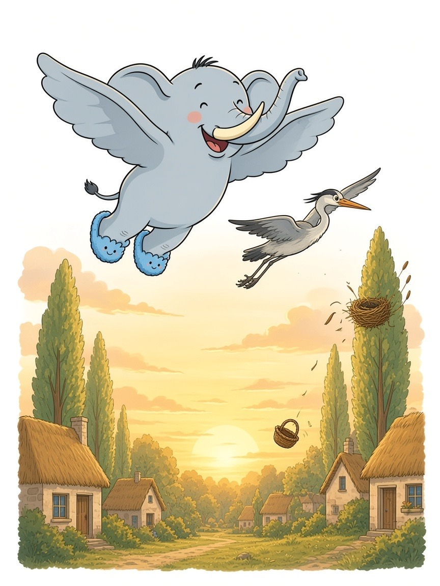
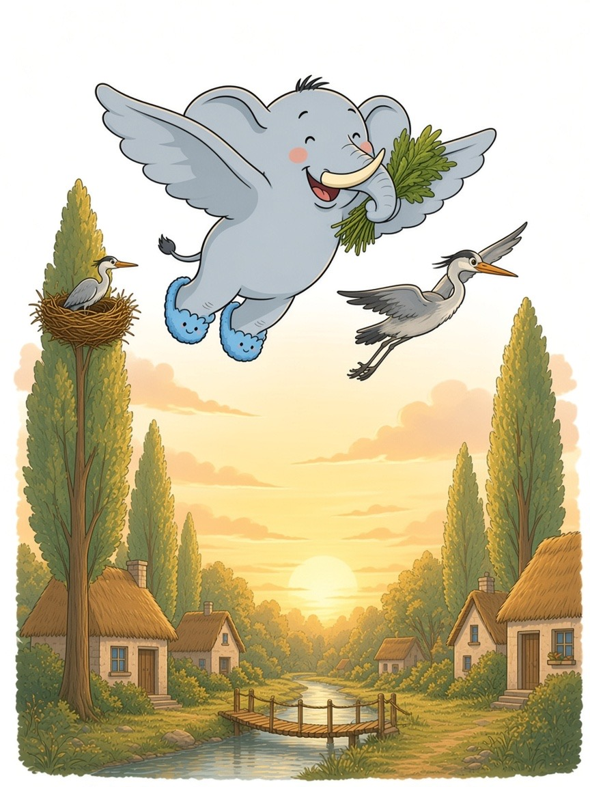

C'era una volta un Elefante di nome Franco, che gli amici chiamavano ... EleFranco. Di cognome faceva Franchini.
Abitava nella sua accogliente casa nel paesino di FrancaVilla, un borgo un po' magico di pioppi altissimi e canali d'argento, dove le case sembravano nidi posati tra i rami, i tetti erano di canna chiara e le passerelle di corda dondolavano piano sopra l'acqua.
Era un pomeriggio di vento dolce e EleFranco aveva una missione piccola e profumata: «Devo andare al mercato delle erbe, in cima al colle, a prendere un mazzetto di tiglio per la tisana della sera, prima che ritirino le ceste!»
Si infilò le sue ciabatte giganti color cielo, con la suola morbida come una nuvola, prese un cestino di vimini e uscì di casa. Le ciabatte affondarono nell'argine e l'acqua del canale tremò nei secchi: THUMP THUMP THUMP THUMP
Sul ponticello di corda vide un airone alto ed elegante, fermo su una zampa sola. Le piume erano color nebbia di fiume, il becco dolce color albicocca, e gli occhi lucidi di preoccupazione. Era AlaFranca.
«EleFranco,» disse con una voce lunga come l'acqua, «il vento ha rubato le canne morbide del mio nido. Sta sull'albero più alto di FrancaVilla, e io da sola non riesco a riportarle su prima che venga sera. Ogni volta che ne prendo un fascio, un'altra vola via.»
Ai suoi piedi, infatti, le canne chiare scivolavano sul ponticello come barchette dispettose.
EleFranco posò il cestino. «Non ti preoccupare, AlaFranca. Le raccogliamo insieme.»
Ma mentre arrotolava le canne con la proboscide, la mente cominciò a vagare: pensò alla tisana, al miele nel barattolo, se il tiglio andava a foglie intere o sbriciolato, e a quale tazza, la gialla o la blu, avrebbe scelto per la sera.
Stava quasi per lasciare andare un fascio nel canale quando AlaFranca gridò: «EleFranco, quella canna sta per volare di nuovo!»
Allora l'elefante scosse le grandi orecchie e disse ad alta voce la sua parola magica: "FOCUS!"
«Le canne non hanno fretta. Noi sì, ma con calma.»
AlaFranca inclinò la testa. «Se apri le orecchie come due vele, il vento di FrancaVilla ti porta. Io volo davanti. Tu seguimi.»
EleFranco aprì le orecchie, piano. Un soffio caldo gli passò sotto la pancia. Le ciabatte si staccarono dal ponticello. E volarono.
Fu un volo bellissimo. Sotto di loro FrancaVilla diventò una mappa di nastri d'argento: i canali, le passerelle, la piazza rotonda come un bottone, i tetti di canna che sembravano salutare. AlaFranca planava in cerchi larghi. EleFranco la seguiva, enorme e leggero, con il ciuffo nero dritto nel vento. Vide gli orti del colle, i fili dove si asciugava il tiglio, e le finestre che si accendevano una per una.
Salirono fino all'albero più alto, un pioppo che arrivava alle nuvole basse. In cima c'era il nido di AlaFranca: una coppa grande, intrecciata con cura, ancora un po' vuota nel mezzo.
«Ecco casa mia,» sussurrò l'airone. «Da quassù si vede tutto il borgo, e si sente anche il profumo del pane.»
EleFranco sistemò le canne con la punta della proboscide, una per una, come si rimbocca una coperta. Il nido divenne soffice. AlaFranca vi si posò, girò su se stessa e sospirò. «Ora sì che è un nido.»
Ma EleFranco era così contento che rise forte. Le orecchie sbatterono, il ramo dondolò, e un colpo di vento troppo allegro sparpagliò le canne appena posate. Il cestino, rimasto appeso alla proboscide, scivolò e cadde verso il canale, lontano e piccolissimo.
«Ops,» disse EleFranco, aggrappato al ramo. «Il nido è di nuovo spettinato, e la mia tisana è volata via insieme al cestino.»
Il ramo scricchiolò. EleFranco scivolò. Non cadde. Si ricordò la lezione di AlaFranca e aprì le orecchie più che poteva, larghe come due vele pallide. L'aria lo prese. Planò.
Girò lento sopra i tetti, sopra la piazza, sopra gli orti del colle. Il vento delle sue orecchie rimise le canne nel nido, ancora più morbide di prima, e AlaFranca le tenne ferme con un'ala. Poi lo stesso vento passò sui fili dell'erborista, gonfiò ogni mazzetto di tiglio e lo rese profumato e pronto.
Lina, dal suo banchetto, vide l'elefante planare come un aquilone gentile. Rise, legò un mazzetto con un nastro di canna e lo lanciò in alto. Finì dritto nella proboscide di EleFranco.
Lui non tornò al mercato a piedi. Planò fino alla porta di casa, orecchie aperte, ciabatte che sfioravano appena il sentiero, e il mazzetto caldo di sole gli solleticava il ciuffo.
AlaFranca, dal suo albero altissimo, batté le ali una volta sola. Il nido era pronto. La tisana della sera anche.
EleFranco capì allora la morale di quella giornata: Chi si fida del vento degli amici torna a casa più leggero.
EleFranco alzò la proboscide al cielo chiaro e scoppiò nella sua famosa risata: OH... OH... OH...